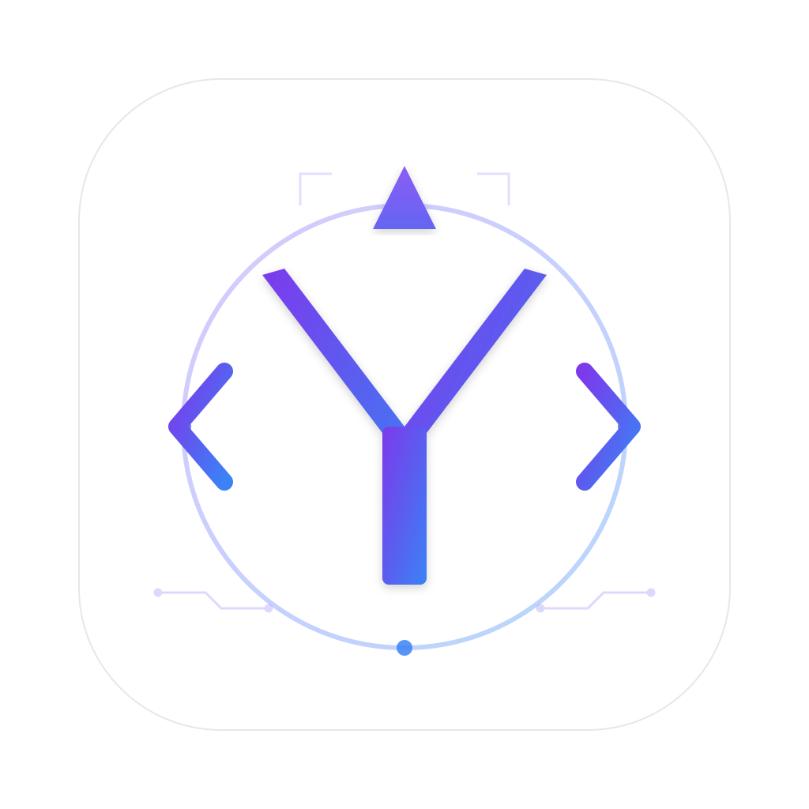

터미널을 닫아도, 작업은 계속됩니다.
한 화면, 모든 코딩 사이클.
Claude Code와 Codex를 GUI로 감싸고, Obsidian의 사고 · Telegram의 이동성 · Git의 기록을 한 창에 모았습니다. 책상 앞에서 시작한 작업이 지하철에서도 흘러갑니다.
에코시스템 — Yuminai를 가운데 두고
Fig 0.1 · 5 surfaces · 1 cycle5분이면 충분합니다
설치 → 워크스페이스 생성 → 첫 응답 스트리밍. 세 단계만 지나면 본인의 워크플로우에 그대로 얹을 준비가 끝나요.
5분 타임라인 — 첫 응답까지
Fig 1.1 · install → onboarding → ⌘N → ⌘↵1.1 설치 + 첫 실행
macOS 26 (Tahoe)
Apple Silicon 권장. macOS 26 신규 디자인 언어와 Liquid Glass를 chrome에 활용합니다.
Claude CLI 셋업
터미널에서 which claude로 경로 확인. 없으면 첫 실행 시 입력 가능합니다.
Codex CLI · Obsidian · Telegram
모두 선택 사항. 이후 설정 ⌘,에서 언제든 추가할 수 있어요.
Onboarding Wizard — 3 step
Welcome
Yuminai를 1줄로 소개하고 “시작” 버튼을 누릅니다.
모드 선택
안전 기본값 vs 모든 옵션 노출. 세 가지 시작 모드 — 초보자, 고급, 사용자 정의.
CLI 확인
자동 탐지에 실패하면 경로를 직접 입력합니다. 통합은 모두 skip 가능.
1.2 첫 워크스페이스 만들기
⌘N 또는 사이드바 좌상단 +
워크스페이스 = 보통 git 리포지토리 디렉토리에 1:1로 대응합니다. 사이드바의 1급 시민이에요.
5가지 중 선택
empty ·
swift ·
typescript ·
python ·
general —
.harness/ 디렉토리가 자동 스캐폴딩됩니다.
1.3 첫 메시지
/tdd 먼저요.
Composer 좌측 3px 오렌지 strip이 “지금 Claude로 보냅니다”를 즉시 알려줍니다. ⌘↵으로 전송하면 응답이 실시간 스트리밍돼요.
3개 프로젝트가 섞이지 않게
tmux 탭 5개로 컨텍스트가 뒤엉키던 시절은 끝. 핀으로 띄우고, 폴더로 묶고, Smart Folder가 알아서 분류합니다.
사이드바 — 위에서 아래로
2.1 사이드바 한눈에 보기
핀
자주 쓰는 워크스페이스를 최상단에 고정합니다.
Smart 그룹
“최근 7일”·“텔레그램 연결됨” 자동 그룹.
폴더
색상·아이콘 변경, drag & drop으로 그룹화.
Health healthy
Telegram 연결 상태 (4가지).
2.2 핀 + 폴더
워크스페이스 → 폴더
사이드바에서 그대로 끌어 넣으면 됩니다. 폴더 안에서 순서도 drag로 정렬할 수 있어요.
폴더 색상 (10)
accent blue purple pink red orange yellow green teal gray
2.3 Smart Folder + Tag
자동 그룹
“최근 7일” · “텔레그램 연결됨”처럼 조건이 변하면 자동으로 멤버가 갱신됩니다. wand 아이콘으로 토글하세요.
다중 태그 + intersection
#urgent #client-X #refactor
여러 태그를 동시에 만족하는 워크스페이스만 보여주는 필터를 Smart Filter로 저장할 수 있어요.
2.4 빠른 전환 + 검색
사이드바 1~9번 매핑
⌘1⌘2⌘3⌘4⌘5 ⌘6⌘7⌘8⌘9
핀과 폴더가 같이 쌓여 있어도 사이드바 순서대로 1~9번에 매핑됩니다.
⌘P fuzzy search
워크스페이스 · 파일 · 노트 · 슬래시 명령을 한 곳에서 검색합니다. ⌘⇧E · ⌘⇧I로 백업도 가능해요.
입력창에 모든 결정이 모입니다
어느 agent로 보낼지, 어느 모델로 추론할지, 어느 권한을 줄지 — 한 번의 키스트로크 안에서 끝나도록 설계됐어요.
Composer 해부도
3.1 Composer 한눈에
좌측 strip 색상으로 어느 agent에 보내는지 즉시 알 수 있어요. Claude=오렌지, Codex=틸그린.
3.2 첨부와 컨텍스트 주입
드래그 & 드롭
파일/폴더를 끌어 놓으면 @<path>로 자동 prepend됩니다.
@note-name
Obsidian 노트를 inline으로 토큰화. 전송 시 본문이 expand됩니다.
@codex · @claude
다른 pane에 그대로 위임. 답변에 다시 mention이 있으면 자동 dispatch도 가능해요.
3.3 슬래시 명령
# 입력창에 “/” 입력 시 자동완성 popover /help — 사용 가능한 명령 목록 /note save — 현재 세션을 새 Obsidian 노트로 저장 /model sonnet — 모델 직접 변경 /test — 사용자 정의 skill (Telegram에서도 호출 가능) /review /summary /status /switch <workspace>
3.4 Multi-pane
single · horizontal · vertical
한 워크스페이스 안에 여러 pane을 띄워 같은 디렉토리를 공유합니다. 파일 시스템이 협업 매개체가 돼요.
primary / secondary
primary pane이 Telegram forward 대상이 됩니다. 1개만 지정 가능.
탭 더블클릭
“Claude (설계)”·“Codex (구현)”처럼 의도를 이름에 박아두면 핸드오프가 명료해집니다.
두 명의 페어 프로그래머
한 명은 설계도를 그리고, 한 명은 망치를 듭니다. 같은 작업장에서 도구를 주고받듯, agent를 한 번에 바꿔 끼웁니다.
핸드오프 흐름 — agent 색상이 그대로 동선이 됩니다
Fig 4.1 · 3단계 릴레이 · 에이전트별 설정 분리4.1 두 에이전트의 강점
Claude
Anthropic · 설계·리뷰에 강함
Codex
OpenAI · 빠른 코드 생성에 강함
4.2 통합 Picker로 한 번에 전환
한 클릭에 agent + 모델
Claude · 설계·리뷰에 강함 ✓ Sonnet — 균형 $3.00/M in · $15.00/M out Haiku — 빠름·저비용 $0.80/M in Opus — 최고 성능 $15.00/M in ───── Codex · 빠른 코드 생성 gpt-5-codex o3 사용자 정의
last-used 자동 복원
각 워크스페이스가 agent별 settings dict를 보유합니다. 전환할 때마다 model · permission · effort가 마지막 값으로 복원돼요.
Claude (Opus / plan) ↓ 전환 Codex (Sonnet / default) ↓ 다시 전환 Claude (Opus / plan 복원 ✓)
4.3 빠른 검토 요청
actor AuthService로 isolation을 잡고, 핸들러에서 await 경계를 명확히 …복붙 지옥에 작별을
PRD를 노트에서 채팅으로 옮기느라 하루에 30번 ⌘C ⌘V를 누르던 시절. @ 한 글자로 끝납니다.
(이전 워크플로우)
휘발하지 않습니다.
컨텍스트 순환 — 사고 → 작업 → 기록
Fig 5.1 · vault loop · 어제의 결론이 오늘의 컨텍스트5.1 Vault 등록
설정 → 통합 → Obsidian Vault 경로
Vault 디렉토리를 picker로 선택. 노트 트리가 Inspector에 자동 빌드됩니다.
전체 텍스트 인덱싱
fuzzy search 가능. ⌘⌥O로 검색창을 띄울 수 있어요.
5.2 컨텍스트 주입 — @
입력창에서 @
fuzzy popover가 떠서 노트를 선택. @2026-05-01-DailyNote 같은 토큰으로 박힙니다. 전송 시 본문이 expand돼요.
같은 이름 노트가 여럿일 때
Wiki Disambiguation Sheet가 떠서 어느 폴더의 노트인지 선택합니다. 한 번 선택하면 그 워크스페이스에 기억돼요.
5.3 자동 노트화
/note save
현재 세션을 새 노트로 저장. 템플릿에 작업명·시간·핵심 변경·후속이 채워집니다.
Daily Note에 자동 기록
옵션을 켜면 작업 완료 시 오늘 Daily Note 끝에 요약이 자동 append됩니다.
워크플로우 정착
“사고는 노트로, 작업은 채팅으로, 결과는 Git으로” — 이 챕터의 골자입니다.
지하철에서 PR을 머지하기
자리를 비웠다고 작업이 멈추던 시절은 끝. 알림이 오고, 답신을 보내고, 결과가 다시 옵니다 — 양방향, 끊김 없이.
하루의 흐름 — 데스크톱 ↔ 모바일
Fig 6.1 · 6h continuity · 2 lanes · 4 events6.1 봇 셋업 — 5단계 파이프라인
토큰이 어디서 출발해 어디로 들어가는지, 5장의 카드로 따라가 보세요. 처음부터 끝까지 약 90초.
BotFather에서 첫 알림까지
Fig 6.2 · 5 steps · ~90s · 토큰 1회만 복사BotFather 열기
Telegram 검색창에 @BotFather 입력 → 대화방 시작.
/newbotYuminaiBot (이름)my_yuminai_bot (username, _bot 끝)
username은 전역 고유
토큰 수신
BotFather가 봇 정보와 함께 HTTP API 토큰을 회신합니다.
설정에 붙여넣기
⌘, → 통합 → Telegram. 토큰 필드에 paste.
연결 테스트
"테스트 알림 보내기" 버튼 → Telegram 봇 대화방 확인.
워크스페이스: nunchi · 14:32
Health: healthy
사이드바 하단 connection pill이 녹색으로 켜집니다.
HEALTHY6.2 Health 4가지 상태 — 무엇이 다른가
사이드바 하단 작은 pill이지만, 색은 4가지 다른 의미를 담고 있어요.
Health pill 상태 매트릭스
Fig 6.3 · 4 states · trigger / 사용자 동작대기중 — 아직 토큰 없음
봇이 설정되지 않았거나 의도적으로 꺼둔 상태. 알림이 발생하지 않습니다.
action · 6.1 셋업 진행
정상 — 양방향 연결
최근 60초 내 LongPoll 응답 OK. 알림과 명령이 모두 흐릅니다. 정상 운영 시 보게 되는 색.
action · 아무것도 안 해도 됨
지연 — 느리지만 살아있음
응답 60–180초. 보통 모바일 네트워크 약화 또는 Telegram 측 일시 지연. 알림은 큐잉됩니다.
action · 1–2분 대기, 자동 회복
실패 — 인증 또는 네트워크
3회 연속 401/403 또는 네트워크 차단. 토큰 회전이 필요할 수 있어요. 클릭하면 Error log sheet가 열립니다.
action · pill 클릭 → 카테고리별 로그
6.3 응답 모드 — 4단계, 시각 비교
같은 결과를 4가지 다른 길이로 받을 수 있어요. 토큰 길이는 막대로, 실제 응답은 채팅 미리보기로.
길이 · 용도 · 실제 응답 비교
Fig 6.4 · 4 modes · token bar는 1000 토큰 기준step 5/8 · 테스트 4/5 통과
실패:
AuthHandlerTests 수정할까요?14:32 · 247 tokenstestRefresh는 새 시그니처에 맞게 인자 1개 추가 필요…14:32 · 812 tokens+ async func refresh(…)3가지 대안 검토 결과 옵션 B 선택…14:33 · 2,847 tokens
/test는 명령 자체가 concise를 강제하므로 봇 default가 detailed여도 짧게 옵니다.6.4 모바일 명령 카탈로그
슬래시 명령 한 줄로 데스크톱이 일을 처리해요. 카테고리는 4가지 — 진행/보고/노트/제어.
슬래시 명령 × 응답 모드
Fig 6.5 · 12 commands · 4 categories · default mode진행 · 작업을 움직이는 명령
보고 · 결과를 가져오는 명령
노트 · 컨텍스트와 기록
6.5 하루의 흐름 — "지하철 오전" 시나리오
책상에서 시작한 작업이 출근길에 보고를 받고, 모바일 답신으로 PR까지 머지하는 4컷 스토리.
실제 4컷 — 데스크톱→모바일→모바일→데스크톱
Fig 6.6 · 60 min · 1 task · 4 surfaces테스트 4/5 통과09:32 · concise
testRefresh자동 수정할까요?09:32
끝나면 PR 만들어줘.09:35
/test → /review → PR.09:35실제 채팅 — concise 모드 한 컷
AuthHandlerTests.testRefresh) 자동 수정할까요?
/test → /review → PR 작성 후 다시 알릴게요.09:356.6 Multi-Bot 운영 — 두 가지 토폴로지
봇 하나로 다 묶을지, 여러 봇으로 격리할지. 프로젝트 규모와 협업 형태에 따라 선택해요.
A: 1봇 × N워크스페이스 vs B: N봇 × M그룹
Fig 6.7 · topology · 격리 단위1봇 × N워크스페이스 — 알림을 한 곳에 모은다
한 봇으로 nunchi/ledger/yumi-app 알림을 모두 받습니다. /switch <ws>로 답신 대상 워크스페이스만 바꿔요. 가볍고 단순.
/switch ledger 로 답신 대상 변경
N봇 × M그룹 — 봇별로 권한과 budget을 분리
봇별로 응답 모드 / 토큰 budget / 알림 필터 / 멤버를 따로 둡니다. 회사용/개인용, 또는 고노출/저노출 분리에 적합. ⌘⇧M로 한눈에.
↳ 봇마다 응답 모드·budget·필터 독립commit 메시지를 다시 고민하지 않아요
diff를 보면 AI가 메시지를 씁니다. 사람은 검토만 — 그렇게 PR 생성, 리뷰, conflict 해결까지 한 sheet 안에서 끝납니다.
5단계 PR 라이프사이클
Fig 7.1 · branch → commit → push → PR → merge7.1 Branch 관리
Branch picker
현재 브랜치 + dirty stats를 사이드바에 표시. picker에서 생성·체크아웃·삭제·rebase까지 가능합니다.
워크스페이스 생성 시 옵션
git worktree add를 켜면 같은 리포지토리의 여러 브랜치를 별도 워크스페이스로 띄울 수 있어요.
save · pop · drop · apply
중간에 다른 작업을 끼워야 할 때, 브랜치 picker에서 바로 처리합니다.
7.2 AI Commit Message
⌘⇧G Commit Sheet
변경된 파일과 diff 미리보기를 한 화면에서 확인합니다.
“AI로 메시지 생성”
Claude / Codex가 diff를 분석해 conventional commit 형식의 메시지를 작성합니다.
검토 + 편집 + Commit
마음에 들면 그대로, 아니면 직접 손봅니다. 편집은 multi-line.
7.3 PR 생성·머지 (gh CLI)
제목 · 본문 · base · head
본문은 AI가 commit 히스토리에서 자동 작성. 사용자 검토 후 GitHub에 PUSH합니다.
comment · request changes · approve
Workflow re-run, Repo insights, Diff viewer까지 sheet 안에서 끝납니다.
7.4 Conflict 해결
block 단위로 ours / theirs / both / custom
Conflict block parser가 자동으로 분리합니다. cherry-pick + interactive rebase도 같은 sheet에서 가능합니다.
오늘 얼마나 썼지? — ⌘D
월말에 청구서를 보고 놀라지 않으려면, 하루 단위로 비용이 보여야 합니다. 시간·메시지·agent별 분포가 한 화면에.
비용 구조 — 모델별 다른 경제학
Fig 8.1 · USD per 1M tokens · input | output자세히 보기 (Detailed)
SwiftUI Charts
agent × model × time 분포를 히트맵·라인 차트로 확인합니다.
다음 7일 예상 비용
최근 사용 패턴 기반 예측. accuracy도 함께 트래킹돼요.
CSV · PNG · SVG
월말 정산이나 비용 회의에 그대로 가져다 쓸 수 있어요.
본인의 작업 방식을 앱에 새깁니다
하네스는 “내가 일하는 법”을 디렉토리로 박제합니다. routing은 입력만 보고 알맞은 agent로 안내해요. plan mode는 외출 중에도 안전을 지킵니다.
자동 라우팅 — 입력 → 분석 → 결정
Fig 9.1 · 규칙 기반 라우팅 · 3초 안에 되돌리기 · 7일간 로그 보관9.1 Plan Mode
코드 실행 없이 계획만
큰 task일수록 plan mode가 안전합니다. 사용자가 plan을 승인해야 실제 실행이 시작돼요.
Telegram에서 명령 시
외부 turn은 사용자가 화면 앞에 없을 가능성이 높으므로 plan mode가 기본값으로 강제됩니다 (옵션).
9.2 Harness 시스템
.harness/ ├── rules/ # 규칙 (코딩 스타일·금지·우선순위) ├── agents/ # 사용자 정의 sub-agent prompt ├── skills/ # /test, /review … 슬래시 명령 ├── hooks/ # 작업 전/후 훅 (test, lint…) └── commands/ # 커스텀 명령 카탈로그
글로벌 (~/.harness/) + 워크스페이스 (.harness/)가 자동 머지됩니다. 새 워크스페이스를 만들면 5가지 템플릿(empty / swift / typescript / python / general) 중에 선택할 수 있어요.
9.3 에이전트 자동 추천
단계 1 · 내용을 읽어요
메시지의 키워드·의도·프로젝트 성격을 살펴서 지금 원하는 일에 가장 잘 맞는 에이전트를 찾아드려요.
단계 2 · 3초 동안 확인해요
3초 카운트다운 안에서 언제든 되돌릴 수 있어요. 고른 이유는 라우팅 로그에 7일간 남겨두고(ADR-052), 언제든 다시 확인할 수 있어요.
단계 3 · 이전 대화를 이어받아요
새 에이전트 창에 바로 앞 답변과 검토 요청 메시지가 자동으로 옮겨져 있어요.
단축키 한눈에
열린 창은 모두 Esc로 닫혀요. 마우스보다 키보드가 빠르도록 — 유미나이의 약속이에요.
글로벌
채팅
패널 토글
통합 / Sheet
이럴 땐 이렇게
자주 마주치는 상황과 한 번에 해결하는 법을 모았어요.
“클로드를 찾을 수 없어요”라고 뜰 때
알림창의 [설정 열기]를 누르거나 ⌘, → 통합 → 클로드 경로 칸에 위치를 직접 입력해 주세요. 터미널에서 which claude를 친 결과를 그대로 붙여넣으면 끝이에요.
대화 중에 에이전트가 갑자기 꺼졌어요
채팅창에 “작업이 중간에 끊겼어요. 다시 시도할까요?” 메시지가 떠요. 자동으로 다시 시작하지는 않아요 — 어떤 상태에서 멈췄는지 직접 확인하시라고 일부러 그렇게 두었어요.
연결 표시등이 빨간색이에요
표시등을 누르면 오류 기록 창이 열려요. 인증 · 횟수 제한 · 네트워크 · 서버 · 메시지 형식 다섯 가지로 나누어 한국어로 보여드려요.
사이드바가 너무 좁아 보일 때
⌘⌥1로 사이드바를 잠시 숨기거나, ⌘⌥0으로 양쪽 패널을 한 번에 닫아 집중 모드로 들어가 보세요.
입력창에서 모델이 안 바뀌어요
최근 업데이트로 고쳐졌어요. 입력창 아래 [● 클로드 · Sonnet ⌄] 버튼을 누르면 에이전트와 모델이 한 번에 바뀝니다.
텔레그램 응답 길이 한도를 넘었을 때
설정 → 텔레그램에서 한도 초과 시 동작을 고르실 수 있어요. 알림만 · 차단 · 짧은 답변으로 줄이기 중 선택할 수 있고, 마지막 옵션은 가장 짧은 응답 모드로 자동 전환돼요.
용어 사전
가이드에서 자주 나오는 말들을 쉬운 한국어로 풀어드려요.
/test, /review처럼 한 단어로 부를 수 있어요.